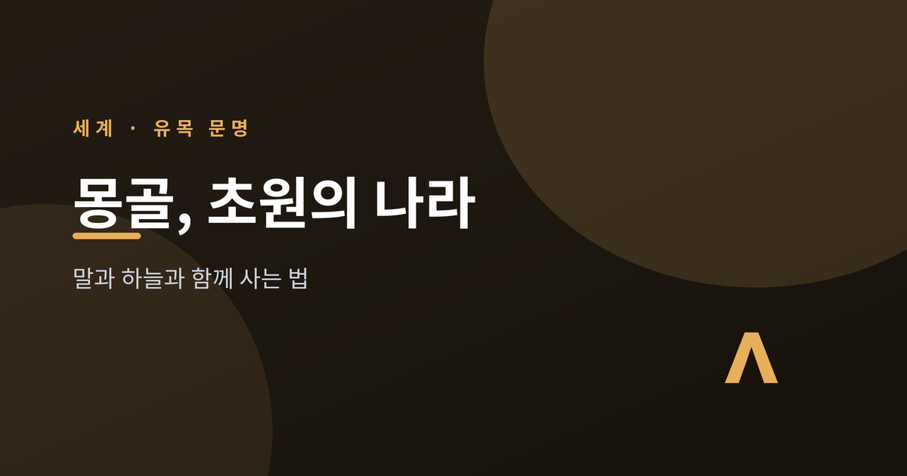
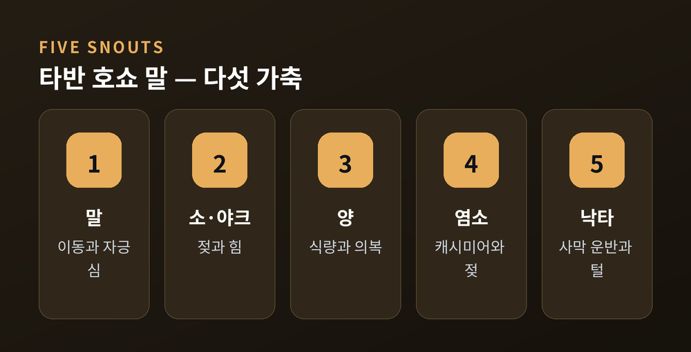
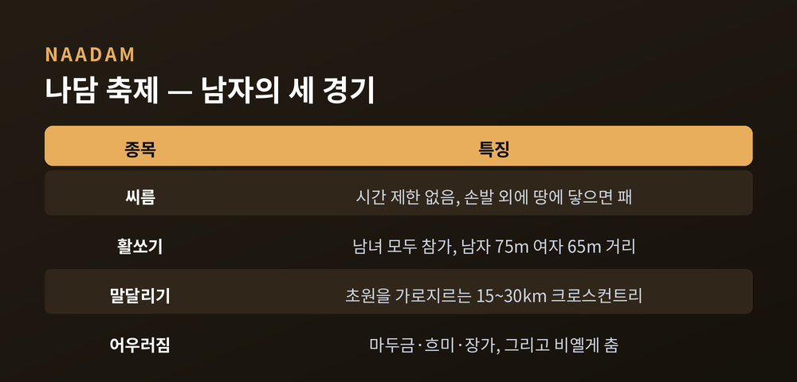
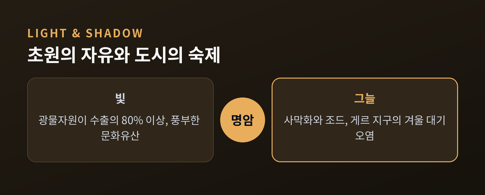

초원의 유목 문명, 말과 하늘과 함께 사는 법
오늘은 몽골을 이야기해 보려 합니다.
넓은 초원과 옅은 인구, 말과 게르, 그리고 칭기즈칸의 나라입니다.
오래된 유목의 결과 빠르게 바뀌는 오늘을 함께 들여다보겠습니다.

몽골의 국토는 약 156만 km²입니다.
세계에서 손꼽히게 넓은 나라입니다.
그런데 인구는 약 355만 명에 그칩니다.
인구 밀도는 km²당 약 2명입니다.
세계에서 가장 사람이 드문 나라 중 하나인 셈입니다.
평균 고도는 약 1,580m입니다.
땅의 대부분은 초원과 반사막, 그리고 사막입니다.
동서로는 약 2,400km, 남북으로는 최대 약 1,260km에 이릅니다.
서쪽과 북쪽에는 호수가 박힌 분지와 삼림 고산이 번갈아 나타납니다.
수도 울란바토르는 세계에서 가장 추운 수도로 꼽힙니다.
이 한 도시에 전국 인구의 절반 가까이가 모여 삽니다.
넓은 땅은 비어 있고, 사람은 한곳으로 쏠립니다.
유목의 중심에는 '타반 호쇼 말'이 있습니다.
'다섯 주둥이의 가축'이라는 뜻입니다.
말과 소, 양과 염소, 그리고 낙타를 가리킵니다.
이 가축들은 단순한 재산이 아닙니다.
식량과 이동, 의복과 연료까지 모두 책임집니다.
그중 양과 염소가 무리의 약 90%를 이룹니다.

집은 게르입니다.
나무 격자에 양모 펠트를 덮은 둥근 이동식 집입니다.
1~2시간이면 세우고 걷을 수 있습니다.
가축 치는 사람을 '말친'이라 부릅니다.
이들은 한 해에 보통 두세 번 거처를 옮깁니다.
지금도 인구의 약 4분의 1이 이런 삶을 잇고 있습니다.
1206년, 테무진이 칭기즈칸으로 추대됩니다.
그 이름은 '보편적 통치자'로 풀이됩니다.
전성기 몽골 제국의 영토는 약 2,300만 km²였습니다.
역사상 가장 넓은 연속 육상 제국입니다.
이보다 더 넓게 이어진 제국은 없었습니다.
제국은 동쪽 태평양에서 서쪽 다뉴브강과 페르시아만까지 뻗었습니다.
그 넓이는 전성기 로마 제국의 약 두 배였습니다.
칭기즈칸은 1227년에 세상을 떠났습니다.
그가 눈을 감을 무렵 제국은 태평양에서 카스피해까지 다스렸습니다.
초원에서 시작된 기마 군단이 대륙의 절반을 이은 셈입니다.
한여름이면 나담 축제가 열립니다.
'남자의 세 경기'라 불리며, 유네스코 무형문화유산입니다.
세 경기는 씨름과 활쏘기, 말달리기입니다.
씨름은 시간 제한이 없습니다. 발과 손 외에 몸이 땅에 닿으면 집니다.
활쏘기는 남녀가 함께 겨룹니다. 남자는 75m, 여자는 65m에서 쏩니다.
말달리기는 트랙이 아니라 15~30km의 초원을 가로지릅니다.

축제장에는 소리도 함께 흐릅니다.
말머리 모양의 현악기 마두금이 울립니다.
한 사람이 두 음을 동시에 내는 흐미 창법도 들립니다.
긴 가락의 장가와 비옐게 춤도 자리를 채웁니다.
초원의 문명은 글보다 소리와 몸짓으로 기억을 전해 왔습니다.
지금의 몽골은 자원의 나라이기도 합니다.
채굴업이 GDP의 약 4분의 1, 수출의 80% 이상을 차지합니다.
구리 생산 확대에 힘입어 2025년 성장률은 약 6.3%로 전망됐습니다.
그러나 그늘도 함께 깊어집니다.
사막화와 물 부족이 취약한 초원을 위협합니다.
노천 채굴은 식생을 걷어내고 표토를 흔듭니다.
세계 석탄 수요가 줄면 경제가 타격을 받을 수 있다는 분석도 있습니다.

'조드'라는 재해도 있습니다.
여름 가뭄 뒤 혹독한 겨울이 겹쳐 가축이 떼로 죽습니다.
거듭된 조드에 목축을 접고 도시로 떠난 가족이 많았습니다.
울란바토르 외곽 게르 지구에는 인구의 약 60%가 삽니다.
겨울 난방 석탄은 전체 대기오염의 약 87%를 차지합니다.
한겨울 기온은 영하 40도까지 떨어집니다.
초원의 자유와 도시의 매연이 한 나라 안에 공존합니다.
정리하면 이렇습니다.
몽골은 가장 넓은 땅에 가장 옅게 사는 법을 오래 가꿔 온 나라입니다.
말과 게르의 오랜 결, 그리고 자원과 도시화의 새로운 숙제가 한자리에 있습니다.
— "넓은 땅을 비워 둘 줄 아는 지혜."
언젠가 그 초원에 서겠냐고 물으신다면, 한 번은 그러고 싶다고 답하겠습니다.